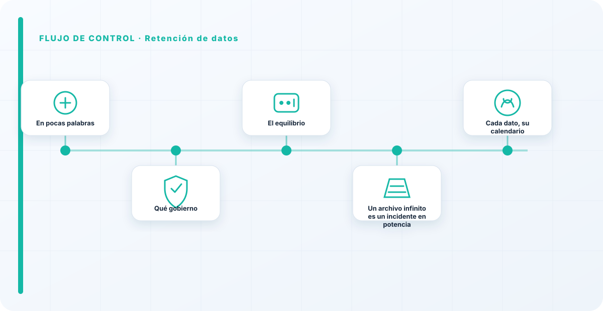
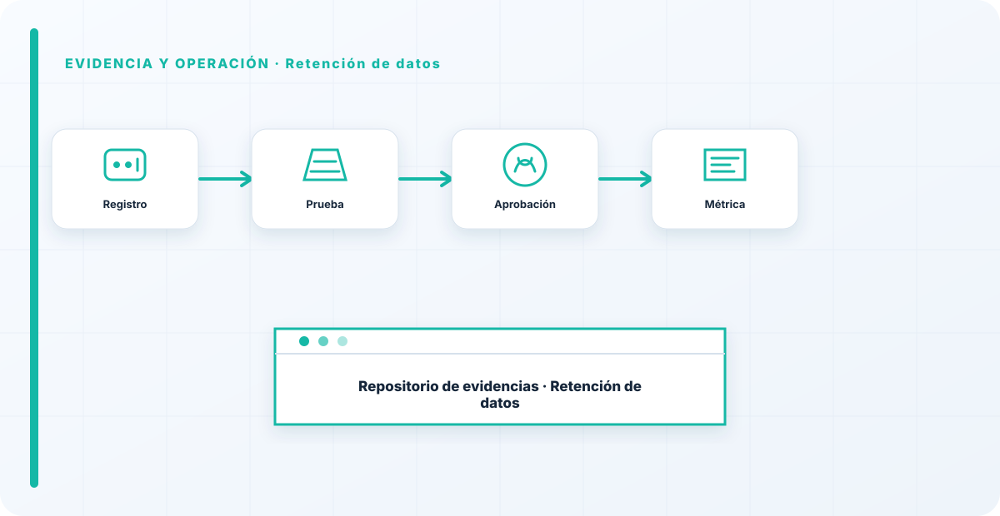

En pocas palabras
Cada prompt y cada log que guardas es un dato que hay que proteger y, algún día, borrar. La retención consiste en decidir cuánto tiempo guardas prompts, respuestas y logs, con qué finalidad y cuándo se eliminan. Es un equilibrio delicado: estos registros son oro para depurar y para seguridad, pero también un depósito de datos —a veces personales— que crece solo y que, si hay una brecha, es justo lo que se filtra.
Qué gobierno
El tiempo que guardo cada tipo de registro, la finalidad por la que lo guardo, y el calendario de borrado. Sin esas tres cosas explícitas, la retención por defecto es "para siempre", que es la peor política posible: máximo riesgo acumulado y ningún beneficio adicional pasado cierto punto.
Los logs de prompts, en particular, son un caso claro: utilísimos las primeras semanas para depurar e investigar, y puro pasivo de datos personales meses después, cuando ya nadie los mira pero siguen ahí para que una brecha los encuentre.
El equilibrio
Retener lo suficiente para operar y responder a incidentes, y no más. Minimización y borrado con calendario, distinto según el tipo de dato. Se cruza con la PII —los logs suelen contenerla— y con la observabilidad, que es la que genera esos registros y que a veces empuja a guardar de más.
La tensión entre observabilidad y protección de datos es real, y no se resuelve ignorando una de las dos, sino poniendo el punto medio de forma consciente y por escrito.

Un archivo infinito es un incidente en potencia
La forma más clara de entenderlo: un archivo infinito de prompts no es prudencia, es un incidente de datos esperando su momento. Cuanto más guardas y más tiempo, mayor es lo que se filtra el día de una brecha, y mayor tu exposición legal por retener datos personales sin necesidad.
Borrar a tiempo no es perder información valiosa; es reducir la superficie de lo que puede salir mal. La retención mínima viable protege tanto a las personas como a la propia organización.
Cada dato, su calendario
La retención no es un único plazo para todo; es un calendario por tipo de dato. Los logs técnicos de rendimiento quizá se puedan guardar más tiempo sin problema porque apenas contienen datos personales; los prompts con posible PII, mucho menos; la evidencia de un incidente, lo que exija la investigación y la ley. Meter todo en el mismo saco —"guardamos todo un año"— es o retener de más lo sensible o de menos lo que hacía falta.
Por eso defino plazos distintos según qué contiene cada registro y para qué sirve. Un calendario afinado protege mejor y cuesta lo mismo que uno grueso; solo requiere haber pensado, una vez, qué es cada cosa y cuánto tiene sentido conservarla.
La observabilidad te pide guardar prompts; la protección de datos te pide no guardar de más. El punto está en el medio: retienes lo justo para operar y responder, con un calendario de borrado, no "por si acaso" para siempre. Un archivo infinito de prompts no es prudencia, es un incidente de datos esperando su momento.
Los errores que veo una y otra vez
- Guardar prompts y logs sin límite "por si acaso".
- No tener calendario de borrado.
- Retener datos personales más de lo necesario.
- No proteger unos logs que son datos sensibles.
- No equilibrar observabilidad y minimización.
Cómo lo llevaría a un entorno real
Cuando aterrizo retención de datos en una organización, no empiezo por comprar una herramienta ni por redactar veinte páginas. Empiezo por dibujar qué ocurre hoy: quién solicita el cambio, quién lo aprueba, qué sistemas intervienen, qué datos cruzan el proceso y quién se entera cuando algo falla. Ese dibujo suele descubrir más problemas que cualquier checklist. En gobierno del dato, lo peligroso no es solo carecer de controles; también lo es creer que existen porque alguien los escribió una vez.
Después separo lo imprescindible de lo deseable. Lo imprescindible debe poder comprobarse: un responsable identificado, una regla clara, una evidencia fechada y un mecanismo para reaccionar. En este caso revisaría especialmente datos, clasificación y linaje. No me vale una respuesta del tipo «lo gestiona el proveedor» o «eso lo mira seguridad». Necesito saber qué persona toma la decisión, con qué información y dentro de qué plazo.
La implantación debe crecer con el riesgo. Un piloto interno puede funcionar con una ficha breve y una revisión manual. Un sistema que afecta a clientes, empleados, dinero o información sensible necesita segregación de funciones, pruebas independientes, monitorización y un expediente mantenido. Mi criterio es sencillo: cuanto más difícil sea deshacer el daño, más fuerte debe ser la barrera antes de producción.
Decisiones que deben quedar por escrito
Hay decisiones que no deberían vivir en una reunión ni en un mensaje de chat. Para retención de datos dejaría documentados el alcance, los supuestos, los límites de uso, las excepciones aceptadas y las condiciones que obligan a detener o reevaluar. El documento no tiene que ser enorme, pero sí debe permitir que otra persona entienda por qué se hizo lo que se hizo.
También registraría quién puede cambiar calidad, quién valida retención y quién recibe las alertas relacionadas con acceso. Cuando esas tres responsabilidades se mezclan, aparece el clásico problema: el mismo equipo construye, aprueba y declara que todo funciona. No siempre se puede separar por completo, sobre todo en organizaciones pequeñas, pero al menos debe existir una revisión por alguien que no dependa del éxito inmediato del despliegue.
Las excepciones merecen un tratamiento propio. Una excepción sin fecha de caducidad acaba convirtiéndose en la arquitectura real. Por eso exigiría motivo, riesgo aceptado, responsable, compensaciones, fecha de revisión y criterio de cierre. Si falta uno de esos elementos, no es una excepción gestionada; es una deuda invisible.

Un ejemplo práctico
Imaginemos que un equipo quiere incorporar retención de datos a un servicio que ya está en producción. La propuesta promete reducir tiempos y automatizar tareas, pero utiliza componentes que cambian con frecuencia. Antes de aprobarlo, pediría una prueba limitada, un inventario de dependencias, un flujo de datos y una definición clara de qué acciones quedan fuera del alcance.
Durante la prueba recogería resultados normales y casos límite. No solo miraría si funciona; comprobaría qué ocurre cuando faltan datos, cambia una versión, se pierde conectividad, llega una entrada manipulada o un usuario intenta superar sus permisos. Ahí es donde se ve si el diseño aguanta. En muchas pruebas felices todo parece seguro porque nadie ha intentado romper la hipótesis de partida.
Si los resultados son aceptables, la salida a producción tendría condiciones: versión fijada, configuración aprobada, logs disponibles, responsables de guardia, procedimiento de rollback y revisión tras las primeras semanas. Si alguno de esos elementos no existe, prefiero retrasar el despliegue. Un día de demora suele ser más barato que investigar después un comportamiento que nadie puede reconstruir.
Qué evidencias guardaría
Para demostrar que el control funciona conservaría evidencias que cuenten una historia completa, no capturas sueltas. La historia debe enlazar necesidad, decisión, implementación, prueba y operación. En retención de datos eso incluye como mínimo la ficha del activo, el diagrama vigente, la configuración aprobada, el resultado de las pruebas y el registro de cambios.
No guardaría información por acumular. Si los logs contienen prompts, documentos, datos personales o secretos, aplicaría minimización, control de acceso y retención. La evidencia debe ayudar a investigar y auditar sin crear una segunda fuga de información. Es frecuente endurecer el sistema principal y dejar un repositorio de evidencias abierto a demasiadas personas.
- Propietario y finalidad de retención de datos, con fecha de revisión.
- Inventario de datos, clasificación y dependencias asociadas.
- Criterios de aceptación y resultados sobre linaje y calidad.
- Configuración efectiva, versión y aprobación del cambio.
- Alertas, incidentes, excepciones y acciones correctivas cerradas.
Señales de que el control no está funcionando
El primer síntoma es que nadie sabe responder con rapidez quién es el responsable. El segundo es que la documentación describe una versión distinta de la que está operando. El tercero es que las alertas existen, pero llegan a un buzón que nadie revisa. Cuando aparecen esos tres síntomas, el problema no es tecnológico: el control se ha desconectado de la operación.
También desconfío de las métricas demasiado perfectas. Cero incidentes, cero excepciones y cien por cien de cumplimiento pueden significar excelencia, pero con frecuencia significan que no estamos mirando. Prefiero indicadores que enseñen tendencia: tiempo de corrección, antigüedad de excepciones, cobertura de pruebas, cambios sin revisión y reincidencias.
Por último, revisaría el comportamiento después de cada cambio significativo. En IA, una actualización de modelo, dataset, prompt, herramienta, permiso o proveedor puede alterar el riesgo sin cambiar el nombre del servicio. Si el proceso solo reevalúa cuando se crea un proyecto nuevo, se quedará ciego durante la mayor parte de la vida útil.
Mi criterio de cierre
Considero que retención de datos está razonablemente controlado cuando el equipo puede explicar el proceso sin depender de una sola persona, reconstruir una decisión con evidencias y detener el servicio sin improvisar. No busco perfección documental; busco que la organización pueda tomar decisiones repetibles bajo presión.
El cierre no consiste en marcar todas las casillas. Consiste en demostrar que los riesgos relevantes tienen propietario, que los controles se prueban y que las desviaciones producen una acción. Si la evidencia no cambia ninguna decisión, probablemente estamos generando burocracia. Si una decisión importante no deja evidencia, estamos creando fragilidad.
Este enfoque es el que intento mantener en toda CyberLibrary AI: explicar el control de forma que lo entienda negocio, pero con suficiente profundidad para que arquitectura, seguridad, auditoría y operaciones puedan aplicarlo de verdad.
Referencias y marcos relacionados
Contenido educativo y técnico. No sustituye asesoramiento jurídico ni una auditoría formal.